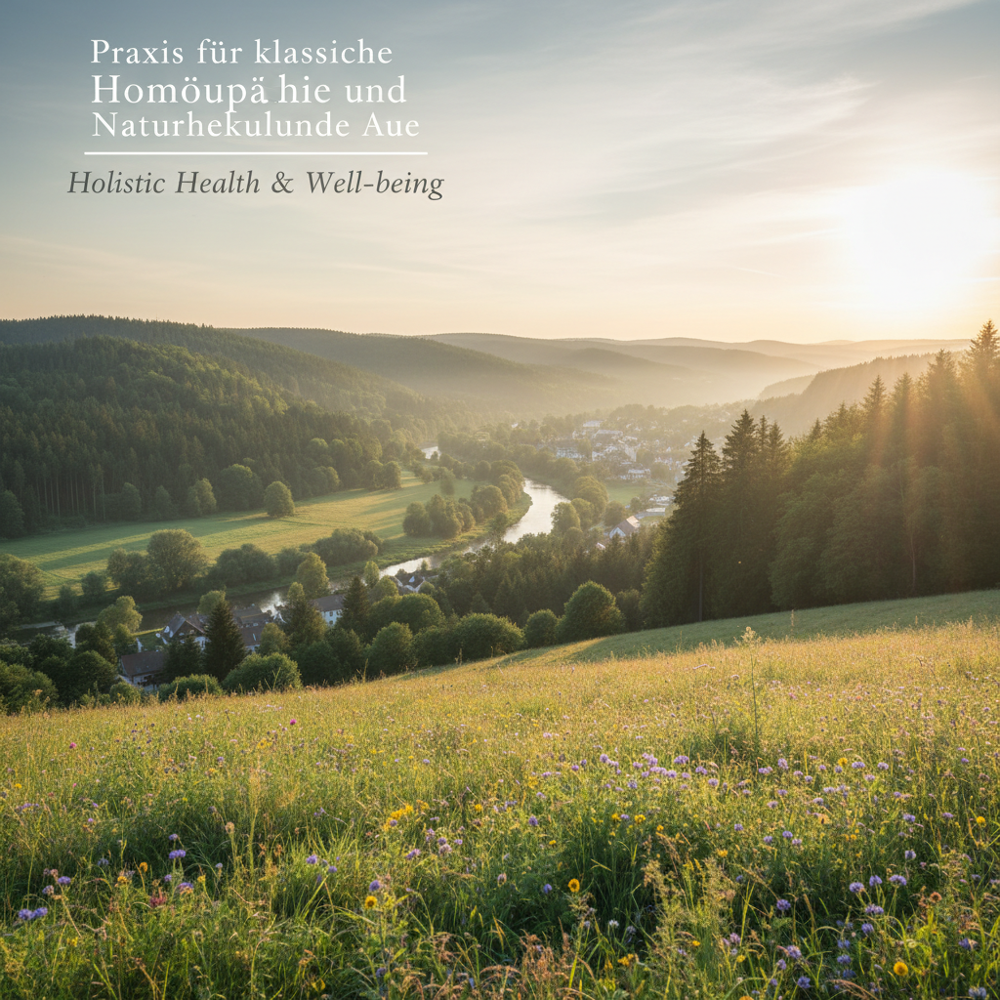

Ihr Weg zu natürlicher Gesundheit & Balance
In der Praxis für klassische Homöopathie und Naturheilkunde von Ulrike Krauß in Aue stehen Sie im Mittelpunkt.
Philosophie der Praxis
Gesundheit als aktiver Prozess
Ich begleite Sie dabei, die Eigenverantwortung für Ihre Gesundheit zu stärken und die Selbstheilungskräfte Ihres Körpers mit sanften, naturheilkundlichen Methoden zu aktivieren.
Bereit für den ersten Schritt?
Ich freue mich darauf, Sie kennenzulernen und Sie auf Ihrem Weg zu begleiten. Vereinbaren Sie jetzt ein unverbindliches Erstgespräch.
Jetzt Kontakt aufnehmen